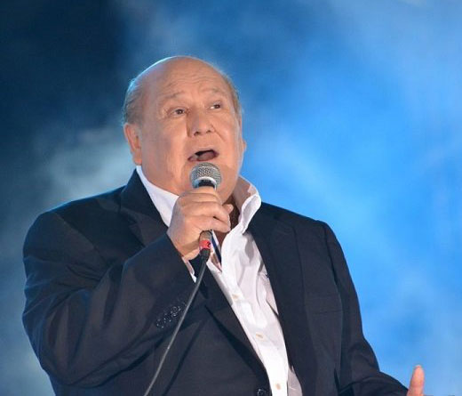

A los veinte viajó a Buenos Aires donde se presentó en CBS (Sony discos), e inmediatamente firmó su primer contrato discográfico. Su primer gran éxito «Celia», llegó a los primeros lugares en los rankings de popularidad a la semana de haber salido al mercado. Le siguieron éxitos como «Fanny», «Cómo te extraño mi amor», «Estelita», «Libre solterito y sin nadie», «Santiago querido», «Qué tiene la niña», «Por un caminito», «Solo una vez» y muchos más. En 1964 fue contratado para el nuevo programa de Canal 9, Sábados Continuados.2 Realizó su propio programa de televisión titulado Bajo el signo de Leo, en canal 9 de Argentina. En 1966 se casó con Mariett, elegida Miss Mar del Plata ese mismo año.
| Como te extraño | Ver aquí..... |
| La niña esta triste | Ver aquí..... |
| Toquen mariachis canten | Ver aquí..... |
| Mary es mi amor | Ver aquí..... |